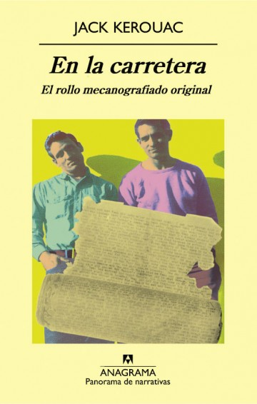
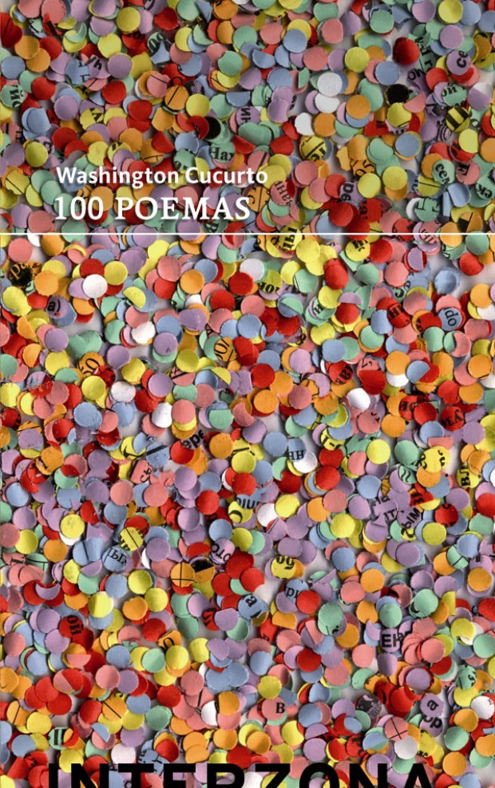

Prestamo
A través de este servicio, la Biblioteca te permite disponer de sus fondos bibliográficos, tanto para su uso en Biblioteca como fuera de sus instalaciones por un periodo de tiempo determinado.
Este servicio se presta a los miembros de la comunidad académica y a las personas autorizadas por la Institución. Su reglamentación tiene como finalidad garantizar la conservación del patrimonio documental del Instituto Universitario.
Tienen derecho a ser usuarios del servicio de préstamos:
- Estudiantes de cualquiera de las carreras de pregrado, grado y posgrado que se dictan en el Instituto.
- Estudiantes de cualquiera de las actividades de Extensión que se dicten en el Instituto
- El personal docente de la Universidad
- El personal administrativo de la Institucion
La Biblioteca reconoce las siguientes modalidades de préstamos a los usuarios:
- Préstamo en Sala de Lectura con estantería abierta.
- Préstamo domiciliario.
- Préstamo Interbibliotecario.
Con la finalidad de propiciar la accesibilidad al fondo bibliográfico por parte de toda la comunidad del Instituto se han establecido condiciones para uso préstamo domiciliario, reconociendo la siguiente división conceptual:
- Bibliografía de cátedra (BC): fondo documental en estantería perteneciente a la bibliografía obligatoria dispuesta por el coordinador de cada cátedra.
- Bibliografía general (BG): fondo documental en estantería que no forma parte de la bibliografía obligatoria.
- Bibliografía duplicada (BD): ejemplares duplicados ubicados en estantería.
Novedades bibliográficas
Últimos títulos incorporados a nuestro fondo documental.
 
Catálogo desiderata
Este servicio se encarga de la gestión de la compra de todo el material bibliográfico. Todo miembro de la comunidad académica puede sugerir la compra de una obra que considere de importancia y que no se encuentre en la Biblioteca, o bien la adquisición de más ejemplares de una obra ya presente en nuestros acervo.
Mediante el siguiente formulario puede sugerir la compra de material para la Biblioteca. Todos los pedidos de compra, serán evaluados de acuerdo a su idoneidad y disponibilidad presupuestaria.
FORMULARIO a DESARROLLARDonaciones
¿Cómo hacer una donación? Antes de efectuar una donación, deberá ponerse en contacto con la Biblioteca a través de alguno de sus canales de comunicación. Deberá informar:
- Cantidad de volúmenes a donar
- Presentar información mínima sobre los documentos (título, autor, temática)